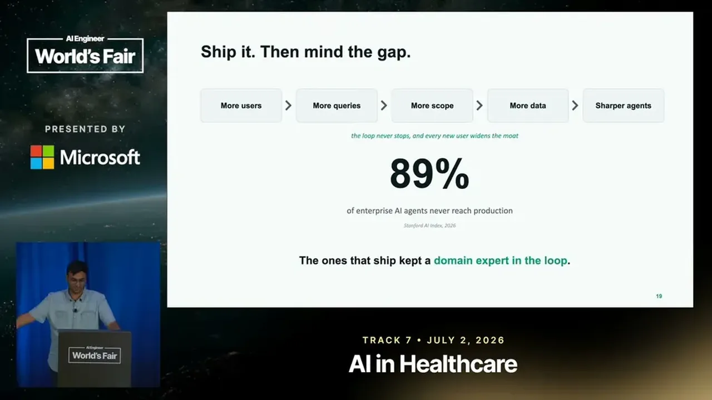

Trading Desks to Clinical Trials: Parallels in Applied Vertical AI
If you only read one thing
- Applied vertical AI works by scoping each agent to one narrow task and building on proprietary data competitors can't buy, since regulated players often withhold failed trades or failed trials by law-adjacent norms rather than technical necessity (c1, c2, c3, c5).
- LLM-as-judge doesn't work in these domains because there's no verifiable reward signal, so the fix is hiring the actual domain expert (trader, scientist) to drive a learning loop of prompt refinement, data curation, and error analysis (c4, c6, c7).
- Stanford's AI Index reports a high share of enterprise AI agents never reaching production, but Ayush argues every agent does reach production — it just often fails to justify its own ROI (c8).
Ayush defines applied vertical AI as applied AI built for one specific industry rather than general-purpose use, contrasting it with something like Google Translate that spans many domains. His own work spans a hedge fund and now Allos, a pharma tech company that builds drugs with AI.
“applied vertical AI is essentially applied AI but built for one very specific industry”
▶ watch at 01:03
The first step in his recipe is formulating the problem narrowly: instead of asking an agent to find the best market opportunities broadly, pick a specific market, industry, and ranking criteria. There's no cost to building more agents, so a single agent shouldn't be asked to do everything.
“you need to pick a very narrow task. You just cannot ask it to do everything”
▶ watch at 03:41
What separates a vertical application from ChatGPT or Claude is proprietary data, which is expensive to buy and mostly unavailable for purchase, so it has to be curated internally. He points to public-disclosure gaps as evidence this data is deliberately withheld: about 30% of pharma funds never disclose failed clinical trials as required.
“what actually makes your application better than let's say ChatGPT or Claude? It is your proprietary data”
▶ watch at 05:14“30% of the funds, which is like nearly 1/3 of firms, never do”
▶ watch at 10:53Ayush describes trying to iterate on agent quality himself and being unable to judge whether outputs were good, since he isn't a trader or a scientist. Reinforcement learning via verifiable rewards works well for math and code because there are answer keys, but there's no equivalent verification signal for trade theses or drug candidates, and he says trying to use an LLM as a judge to substitute for that expert judgment was a mistake.
“model cannot verify itself, specifically in these fields, because reinforcement learning via verifiable rewards is really good at math and code”
▶ watch at 09:22“what LLM is essentially doing, it's it's predicting the next probable word”
▶ watch at 08:50His fix was to hire the actual domain expert the product is meant to serve, who then drives an endless learning loop: refining prompts, curating data sources, and judging outputs, climbing from cheap error analysis up toward RLHF over time. He cites a Stanford AI Index figure on the share of enterprise AI agents that never reach production, but argues instead that every agent does reach production — it's ROI, not deployment, that most often fails. He frames the field as still needing causation rather than correlation to fully close the gap, and closes on domain expertise and proprietary data, not model or infra tooling, as the actual moat.
“you hire the person who you want to sell it to cuz there is, to be honest, no other way around”
▶ watch at 11:55“80% 89% of enterprise AI agents never reach production”
▶ watch at 16:36“for the models to actually make good decisions, they don't need to do correlation, they need to do causation”
▶ watch at 18:13“what is moat and no one will come and sell it to you. You won't have to curate it on your own is the domain expertise”
▶ watch at 19:14
Commentary (ours)
The Stanford AI Index figure gets cited as both 80% and 89% in the same breath, and the causation-vs-correlation framing leans on Yann LeCun's position without independent argument — useful as color on where Ayush thinks the technology still falls short, but not something to treat as a rigorously sourced number (ours).


Underlying detail — every claim, typed and timestamped (10)
| Stance | Claim | t |
|---|---|---|
| asserts | Applied vertical AI is applied AI built for one specific industry rather than general-purpose use. | 01:03 |
| recommends | Teams should scope each agent to a narrow task rather than asking it to do everything. | 03:41 |
| warns | What differentiates a vertical application from ChatGPT or Claude is proprietary data, not the model. | 05:14 |
| warns | Models can't verify their own output in fields like trading and pharma because there's no verifiable-reward signal like in math or code. | 09:22 |
| asserts | About 30% of pharma funds never disclose failed clinical trials as legally required. | 10:53 |
| recommends | Teams should hire the actual domain expert they're building the product for, since there's no other way to judge output quality. | 11:55 |
| warns | Using an LLM as a judge to substitute for domain-expert evaluation was a mistake because an LLM is just predicting the next probable word. | 08:50 |
| asserts | A Stanford AI Index figure states most enterprise AI agents never reach production, though Ayush disagrees with the framing. | 16:36 |
| predicts | Models need to reason causally rather than by correlation before they can make good decisions in these fields. | 18:13 |
| asserts | Domain expertise and proprietary data, not model or infrastructure tooling, are the real competitive moat. | 19:14 |
Machine-readable copy embedded in this page (script#ontology) and in the corpus ontology.